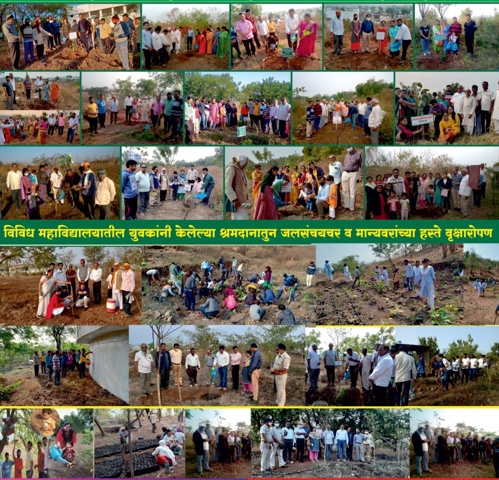
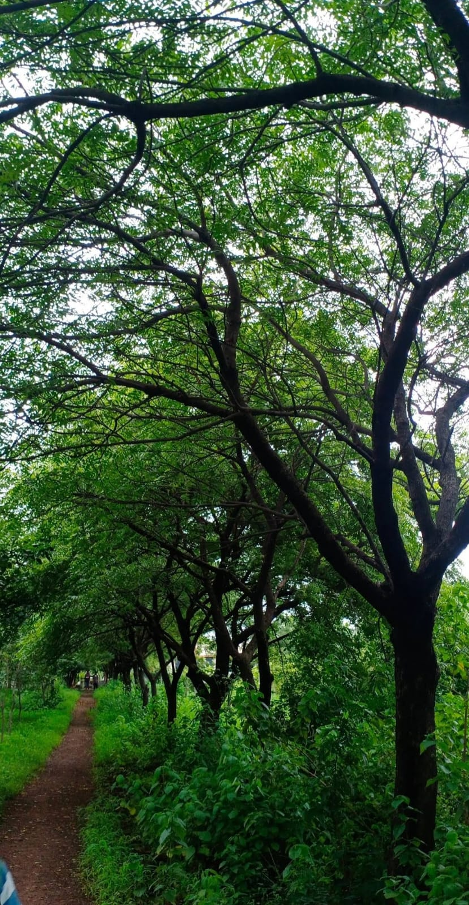
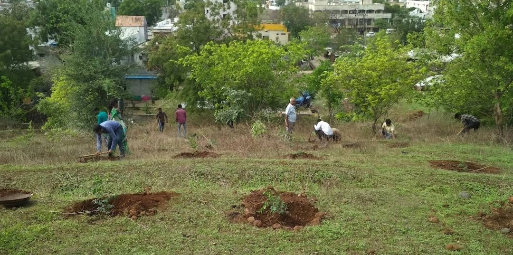
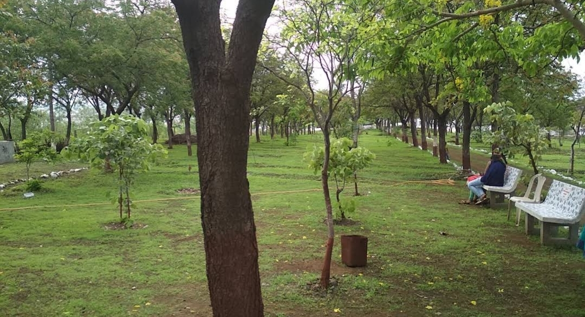
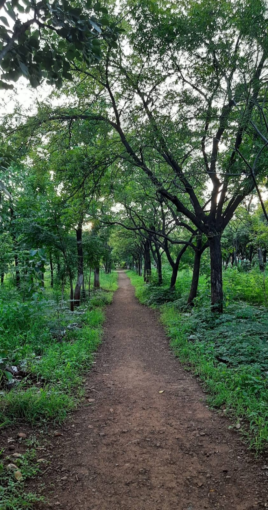
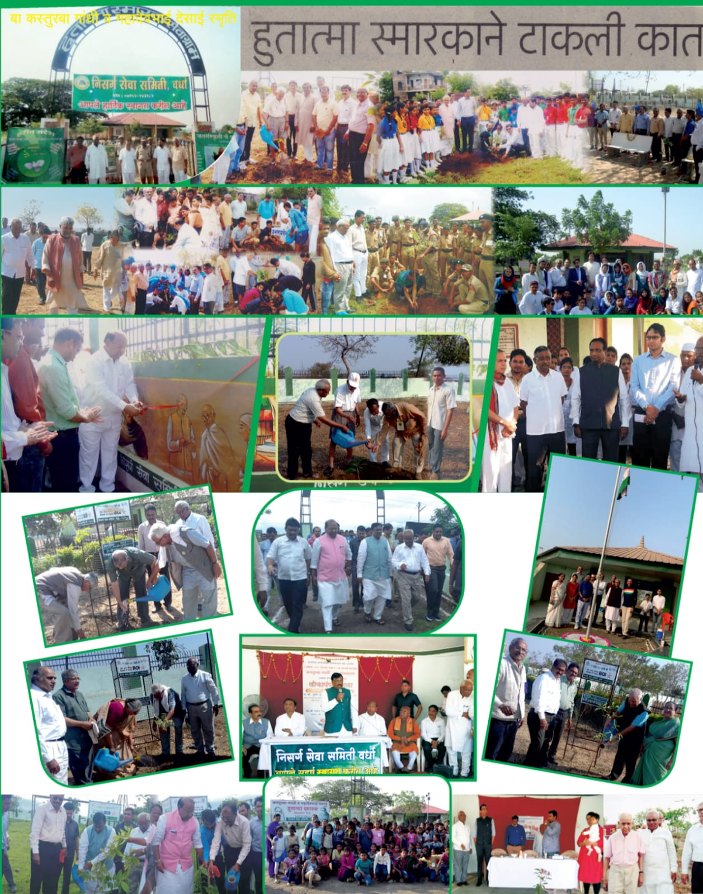

Photo Gallery








Nisarg Seva Samiti is a dedicated environmental organization committed to tree planting, conservation, and ecological restoration. Based in Wardha, Maharashtra, our flagship initiative is the creation and conservation of "Oxygen Park" (Pranavayu Baug) at Nisarg Hills. We work in active collaboration with the District Administration, Municipal Council, Social Forestry, Forest Department, and local citizens to make environmental protection a people-oriented mass movement.
To deeply connect the community with nature, we promote public participation through innovative concepts such as "One House-One Tree," and encourage planting trees to commemorate birthdays, weddings, body donation pledges, new year greetings, and anniversaries. Beyond traditional planting, our special initiatives feature a Tree Library (Tree Academy), a Nakshatra Van (Constellation Forest), a "Village of Trees," and an Open Gym.
To support the community in their own green efforts, we also operate a dedicated "Dial-a-Tree" helpline (07152-243983, 9822523895). The ongoing success of our initiatives is made possible through the financial assistance of local dignitaries and the active cooperation of school and college students.
Our journey began on the once-barren ITI Hill with the planting of 1,000 saplings of 20 different native Indian species. To ensure the survival of this new ecosystem, we implemented comprehensive water harvesting (CCT/LBS) by leveling the hill from top to bottom to conserve all falling rainwater. In recognition of these foundational efforts, the Government of Maharashtra honored the committee with the 'Vanshree' award.
Our conservation work was recognized on a national level when the Government of India honored us with the prestigious 'Priyadarshini Indira Gandhi Vrikshamitra Award'.
Under the Government of Maharashtra's ambitious 50 crore tree-planting program, our efforts
scaled massively across a 10-acre area. We focused on long-living native species such as Banyan,
Peepal, Bel, Umbar, Amla, Tamarind, Amaltas, Jamun, Behda, Ritha, and Kadamba:
2017: Planted 5000 saplings
2018: Planted 5000 saplings
2019: Planted 4000 saplings
We adopted the rapid-growth Miyawaki Dense Forest method, planting an additional 2,000 saplings. This phase included 100 diverse, long-living Indian species such as Charoli, Hirda, Moh, and Neem.
Over the course of 26 years, the continuous work of sowing the seeds of tree planting and water conservation has turned a desolate hill into the lush, thriving "Oxygen Park." Today, tree planting and conservation have successfully become a true mass movement in Wardha.
Experience a unique way of learning about trees through our interactive Talking Trees platform.
Visit Talking Trees





Name of the President: Mr. Murlidhar Wamanrao Belkhode
Phone: +91 9822523895
Email: murli.nisarg@gmail.com
Location: Nisarg Seva Samiti, Oxygen Park, Nisarg Nagari, Pipri, Wardha, Maharashtra, India.